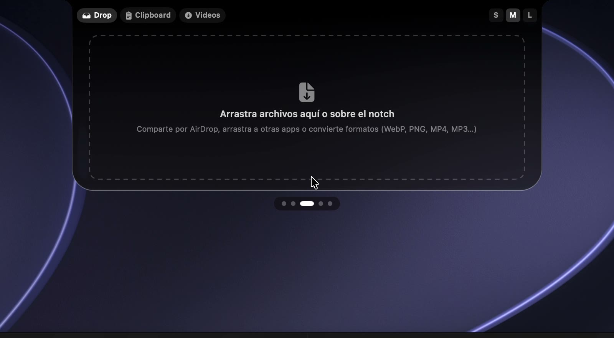
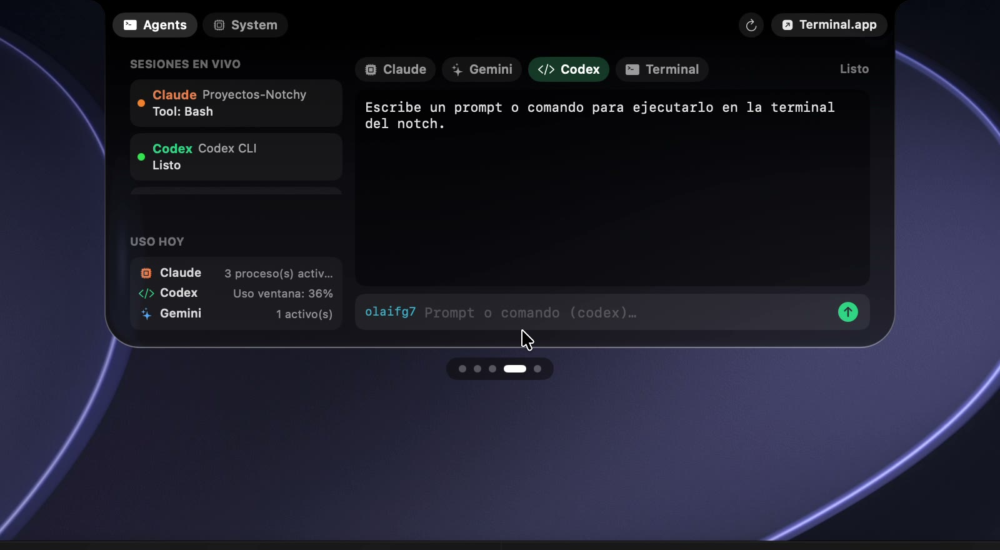
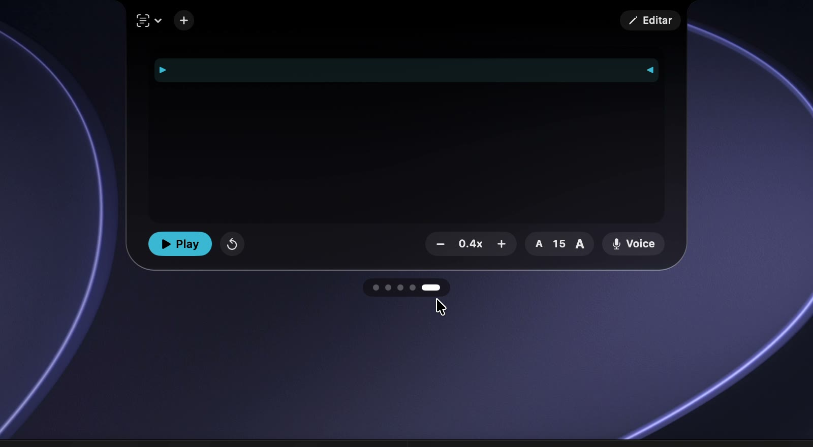

EL NOTCH, EN MOVIMIENTO
Se abre cuando lo necesitas.
El notch se transforma en tu espacio de trabajo. Mira cómo aparece la isla y cómo vuelves a tu escritorio.
PARA MAC Un espacio que aparece cuando lo necesitas
Música, tareas, controles y pequeñas cosas importantes, reunidas en el notch. Notchy convierte un espacio que ya conoces en uno que trabaja contigo.
macOS 14 o posterior · Swift y SwiftUI
ASÍ SE VE EN TU MAC
Desde el primer vistazo hasta el cambio entre espacios: descubre Notchy en funcionamiento, con capturas y grabaciones reales de la aplicación.
A TU ESTILO
Cada tema cambia el cristal, el color y los detalles de la isla. Todo lo que ves son grabaciones reales de la app: elige un tema y mira cómo se abre y cómo cambias de espacio.



INTERACTIVO
Una maqueta ligera, sin vídeo: pasa el cursor por el notch, haz clic para abrir la isla, cambia de espacio, arrastra un archivo a la Bandeja y cambia el tema.
Pasa el cursor por el notch · clic para abrir · Esc cierra · ← → o desliza para cambiar de espacio · arrastra las tarjetas para reordenarlas
UN LUGAR PARA TODO
Ocho espacios que puedes ordenar, ocultar y recorrer con un gesto o un atajo de teclado.
Tu tablero personalizable de widgets: cambia su orden, tamaño y contenido para tener a mano lo que más usas.
TU ESPACIOControla Apple Music, Spotify y contenido compatible en Safari. Portadas, progreso, letras sincronizadas, espectro y salida de audio.
REPRODUCCIÓNGuarda archivos temporalmente arrastrándolos al notch; sácalos después y convierte formatos de imagen, vídeo o audio.
ARCHIVOSConsulta, busca y fija elementos copiados, con vistas previas de enlaces, colores e imágenes.
HISTORIALGuarda guiones y léelos con desplazamiento continuo. El modo Voz puede seguir tu lectura mediante reconocimiento de voz.
PRESENTACIONESConsulta eventos agrupados por día, accede a reuniones y conecta tus tareas de TickTick si lo configuras.
AGENDAUsa Claude Code, Codex, Gemini CLI o zsh en una terminal, consulta sesiones locales y revisa CPU, memoria, red y estado de seguridad.
TERMINALEspejo de cámara, notas con autoguardado, lanzador de aplicaciones y controles para Atajos, concentración y pantallas.
UTILIDADESA TU MANERA
Desde una canción hasta las luces de casa: elige solo lo que necesitas en tu tablero.
Configura interruptores, escenas y acciones con los Atajos de macOS. Agrúpalos por habitación y elige su icono y color. Los interruptores pueden usar atajos separados para apagar y consultar el estado.
Apple Home funciona mediante Atajos configurados; no descubre accesorios directamente.
Pomodoro alterna concentración y descansos, admite duraciones de 1 a 180 minutos y conserva el tiempo de finalización al reiniciar. Opcionalmente activa el modo de concentración con Atajos.
SIEMPRE CERCA
Con el notch cerrado, las actividades y alertas configurables aparecen justo donde las necesitas.
Música y letras, temporizador, próximo evento, sesiones y uso de IA, batería del Mac y audio Bluetooth, tiempo, aire y amanecer o atardecer.
Indicadores de carga y batería baja; alertas de USB, redes Wi-Fi abiertas o WEP, secretos copiados y final del temporizador.
Indicadores de volumen y brillo, animaciones de bloqueo y desbloqueo, sonidos configurables, respuesta háptica y un brillo sutil al pasar el cursor.
CONSUMO TRANSPARENTE
Una medición real del proceso en un Mac concreto. No es una promesa de consumo constante ni una medición por función.
Muestras de ps; 100 % equivale a un núcleo lógico.
Aproximadamente un 0,33–0,36 % de 8 GiB de RAM.
Máximo facilitado por el autor; no se dispone aquí de las condiciones de esa medición.
ioreg, 11 veces durante 20,3 segundos. No cambió en ese intervalo. El estado visual y la carga de fondo no estaban controlados; el trabajo indirecto de WindowServer no se atribuye a este contador, así que no representa el consumo total de GPU de la app ni permite establecer un porcentaje global fiable.TÚ DECIDES
Las funciones tienen necesidades distintas. Puedes elegir cuáles usar y configurar.
Las credenciales de TickTick se guardan en el Llavero. El historial del portapapeles puede persistirse localmente o mantenerse solo en memoria; se filtran marcadores privados y algunos secretos, sin garantía de detección perfecta.
El tiempo, las letras, las portadas, TickTick y las descargas pueden necesitar conexión y servicios externos.
Según lo que actives, macOS puede solicitar acceso a calendario, recordatorios, accesibilidad, automatización, cámara, micrófono, reconocimiento de voz, audio, Bluetooth o ubicación.
Mensajes está desactivado por defecto: requiere Acceso Total al Disco para leer la base local y usa Mensajes para enviar respuestas; Contactos es opcional.
EMPEZAR
Notchy se compila para macOS 14 o posterior. Para compilar desde el código necesitas Xcode o las herramientas de línea de comandos de Apple.
Desde la carpeta del proyecto, ejecuta ./build-app.sh --install para compilar, instalar en Aplicaciones y abrir.
Abre Notchy, entra en Ajustes desde la barra de menús y configura pestañas, widgets y atajos a tu gusto.
Activa los permisos e integraciones que necesites. Apple Home usa Atajos; los agentes requieren sus CLI instaladas.
Las descargas de vídeo requieren herramientas adicionales (yt-dlp, ffmpeg y node). TickTick y la reproducción de Safari requieren configuración adicional. Algunas funciones mostradas corresponden a cambios locales aún no publicados.
PREGUNTAS FRECUENTES
La interfaz está pensada para el notch del MacBook; las opciones de pantalla dependen de la configuración de la app.
Puede ejecutar Atajos que controles y configures para accesorios y escenas de Casa. No conecta ni descubre los dispositivos directamente.
Depende de tu equipo, la actividad y las funciones activas. La muestra de esta página es orientativa. La medición del cliente directo de GPU no incluye necesariamente la composición de macOS.
Notchy puede abrir las CLI compatibles ya instaladas y leer registros locales para mostrar actividad. Los comandos se ejecutan con los permisos de tu usuario.